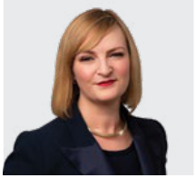
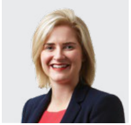
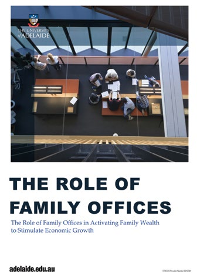
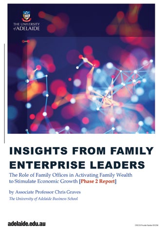

Mutual Trust and the University of Adelaide
Business School Publication
Why the Modern Family Office Matters
Mutual Trust’s Purpose
Our Purpose is to help families achieve what matters most.
We pride ourselves on:
Caring for our families, our people and communities,
not just their finances
Delivering what they require under one roof
Providing pre-eminent independent advice
Enabling our families to have a positive impact on society.
We do this with people who are excellent, heartfelt, inspiring
and principled.
In doing so, we will be the exceptional Multi-Family Office.
Mutual Trust acknowledges and honours the traditional custodians
of the lands upon which we work. In Melbourne, we work on the
lands of the Wurundjeri People of the Kulin Nation. In Sydney, we
work on the lands of the Gadigal people of the Eora Nation. In
Adelaide, we work on the lands of the Kaurna people of the
Adelaide Plains. In Perth, we work on the lands of the Whadjuk
people of the Nyoongar nation. We pay respect to Elders past,
present and emerging.
Mutual Trust’s definition of a Family Office
The functional infrastructure made up of people, systems and
processes that supports a Family Enterprise in planning, managing,
transferring and perpetuating wealth in an integrated way across
generations to achieve what matters most to the family, as well as
sustain the positive contributions they make to society.
The support from a Family Office can extend to family advisory,
family governance and decision-making processes, education of
family members, intergenerational wealth transfers, asset
protection, philanthropy, financial administration, tax compliance
and investment management. A Family Office is not necessarily a
legal entity, physical location or organisational structure,
although it will often take on many of these traits as a family’s
wealth grows.
What is a Family Enterprise?
A Family Enterprise is defined as the collective activities of a
family of significant wealth or an individual of significant
wealth and their family members. These activities encompass the
family’s entrepreneurial, philanthropic and investment endeavours,
governance, taxation compliance, development of the rising
generation and succession and estate planning, and family
engagement pursuits.
The term ‘Family Enterprise’ may also encompass the family’s
operating businesses.
Methodology
The research referred to in this report comprises two primary
research reports authored by Associate Professor, Dr. Chris
Graves, from the University of Adelaide:
The Phase 1 report: The Role of Family Offices used research
derived from three resources: insights gained from previous
survey reports of the Australian Family Office sector; insights
gained from a review of the latest literature on Family
Enterprises and Family Offices from around the world; and
insights gained from interviews conducted by the University of
Adelaide with Family Office experts in the field both in
Australia and overseas. Interviews were transcribed and analysed
using NVivo. This process identified several themes that
were grouped according to the broad research questions that were
the focus of Professor Graves’ study.
For the University of Adelaide’s Phase 2 report: Insights from
Family Enterprise Leaders, information provided was derived from
insights gained from interviews of ultra-high-net-worth (“UHNW”)
family leaders. Specifically, a qualitative analysis of
interviews with 27 family leaders was undertaken by the
University of Adelaide.
The University of Adelaide’s two-phased reports received funding
and in-kind support from Mutual Trust and received a research
grant from the South Australian Government’s Research and
Commercialisation and Start-up Fund.
This report was written and produced by Mutual Trust. In addition
to containing research and data from the University of Adelaide,
it features insights of senior advisors who have deep expertise
supporting some of Australia’s wealthiest families, outlining
the framework Mutual Trust uses to help UHNW families formulate
their strategies for success. This includes encouraging and
empowering family members to flourish – professionally
and personally – as well as underpinning the continued
growth and transfer of significant
wealth to future generations.
All participants quoted in this report have provided their consent
to disclose their story, however, details such as names and
places have been changed for privacy reasons.
Table of Contents
Welcome8
Introduction10
Section 1: The positive socio-economic impact of wealthy
families12
Section 2: How Family Offices help wealthy families18
Section 3: Modern Family Office practices make a
difference28
Conclusion50
Contributors to this report52
References60
Welcome
It is with great pleasure that we welcome readers to our Family
Office Report. It explores the practices adopted by wealthy
families that enable them to succeed in passing their wealth on to
future generations, and how the probabilities of success
significantly improve with the help of a modern Family Office.
This report outlines the multi-faceted approach that a modern
Family Office takes to assist families in creating a long-term
strategy for their success. It outlines the different
configurations Family Offices can take and the criteria by which
families can decide the model that would suit them best. A first
of its kind in Australia, the report draws on the academic
research and findings of the University of Adelaide and has been
prepared by Mutual Trust.
Each generation faces serious wealth-preservation challenges
which, if not carefully managed, can lead to the erosion not only
of wealth but of family entrepreneurship, harmony and unity. There
are also significant implications for Australia’s prosperity and
societal welfare.
Families of wealth are vital to the Australian economy, providing
large numbers of jobs, capital, business innovation and community
support. This is put at risk if wealthy families are not
effectively supported. If the leading strategic practices of
Australia’s most successful Family Offices are adopted by families
of wealth, then more private capital will be grown and deployed –
for the benefit of the families themselves, the economy and
society.
Mutual Trust, as a Multi-Family Office, has more than 100 years of
experience in helping families successfully manage their
intergenerational wealth by adopting our proven multi-faceted,
purpose-led approach. We express our gratitude for the
contribution of our research partner, the University of Adelaide.
Our warmest appreciation goes to Mutual Trust’s clients who have
put their deep trust in us. We also thank many of you for your
generous contribution to this publication in sharing your insights
and experience.
Yours sincerely,
Phil Harkness
Mutual Trust CEO
and Managing Partner
Jeff Steiner
Partner,
Head of Family Office
“We have seen first hand that when Family Enterprises work
together purposefully, they are a powerful force. They deploy
their capital to expand their businesses, employ people, build
infrastructure, invest in innovation, back start-up ventures and
give thoughtfully and strategically to charities. As their
success grows, they also pay more tax which stimulates the
economy. The economic multiplier effect of their pursuits and
activity is considerable.”
PHIL HARKNESS, CEO AND MANAGING PARTNER, MUTUAL TRUST
“Just imagine the entrepreneurial, philanthropic, financial and
personal energy that can be unlocked if every Family Enterprise
has a clear sense of purpose for its wealth and a strategy to
execute it.”
JEFF STEINER, PARTNER, HEAD OF FAMILY OFFICE, MUTUAL TRUST
Introduction
As highlighted in the research findings of this study, Family
Enterprises are a significant contributor to Australia’s
prosperity and societal wellbeing. Consequently, the continuity of
Australian Family Enterprises is in everyone’s interests.
With the ‘great wealth transfer’ upon us, where an estimated
AUD$3.5 trillion of wealth globally is anticipated to be passed
between generations from now until 2030, it is more important than
ever for Family Enterprises to adopt an appropriate Family Office
model to assist them in planning, managing, transferring and
perpetuating the contribution of their wealth across generations.
By adopting an appropriate Family Office model for managing their
wealth, Family Enterprises can multiply the impact their wealth
has on the broader economy. This research highlights that every
one percentage point improvement in annual return on the wealth
managed by Australian Family Offices results in greater employment
opportunities by way of job creation and therefore an increase in
Gross Domestic Product and tax contributions.
The reality is many Family Enterprises do not have an appropriate
Family Office model in place to effectively manage their wealth
for the future. This is because:
they are not aware of alternative Family Office models and
configurations and/or
they struggle to transition to a more appropriate model and/or
believe it is too costly and/or
the broader family does not support a change to wealth-managing
transformation.
It is my hope that this research contributes towards a better
understanding of the nature and purpose of Family Offices and how
the selection of an appropriate Family Office model with modern
practices, can assist a Family Enterprise to achieve what matters
most to the family as well as boost the positive societal
contribution they make.
I would like to thank the Government of South Australia and Mutual
Trust for funding this important piece of research. I would also
like to thank the Family Enterprise advisors and leaders who
willingly gave up their time to be interviewed as part of this
research. This project has been a great example of how industry,
government and academia can work together to advance knowledge for
the betterment of society.
Dr. Christopher Graves
Associate Professor – Entrepreneurship & Family
Enterprise
Head of Entrepreneurship, Innovation and Family Enterprise
Discipline
Head of Family Business Education & Research Group
(FBERG)
The University of Adelaide Business School
SECTION 1
The positive socio-economic impact of wealthy
families
Wealthy families have a significant positive socio-economic impact
on Australia
Families of wealth are vital to the Australian economy:
Their Family Enterprises provide large numbers of jobs to the
private sector, employing 6.32 million Australians.
As a result, they pay AU$294 billion in wages, 48.3% of total
private-sector wages each year.
They play an important role in the Australian private equity and
venture capital sector, providing 7% of the total sector
funding. Also providing essential funding to small projects and
businesses not supported by those private equity and venture
capitalists who favour bigger projects.
Wealth invested outside their operating businesses have a
significant impact on the economy. The 350 largest Family
Offices manage between AU$515 billion and AU$695 billion of
wealth outside their operating businesses. The investment of
this wealth led to 446,000 to 600,000 new full-time jobs, which
in turn generated AU$38 billion to AU$51 billion in further
wages and AU$3.6 billion to AU$5 billion in additional tax
payments (excluding personal income tax).
They contribute around AU$1 billion each year to educational
support and poverty alleviation for those most disadvantaged, as
well as scientific research, technological advancements, arts
and health-oriented philanthropic activities.
Research undertaken by the University of Adelaide shows that every
one percentage point improvement in annual return on the wealth
managed by Australian Family Offices will result in:
The creation of between 35,700 to 48,000 full-time jobs;
AU$3.1 billion to AU$4.1 billion in wages;
AU$5.8 billion to AU$7.8 billion in Gross Domestic Product; and
AU$290 million to AU$390 million in direct taxes (excluding
personal income tax).
The total number of Australia’s wealthy families is expected to
increase by 28.5% from 2020 to 2024 adding a multiplier effect to
these benefits.
The impact of family wealth is more than economic. It includes
involvement in philanthropic and responsible investment
activities, with family members working together with a shared
purpose to achieve an impact in the communities in which they
live, and build self-efficacy of the next generation of family
members.
Families of wealth are vital
to the Australian economy
6.32
MILLION
AUSTRALIANS EMPLOYED
by Family Enterprises in the private sector.
7%
OF TOTAL FUNDING
provided to Australian Private Equity & Venture
Capital sector.
$294
BILLION
IN WAGES PAID
48.3% of total private-sector
wages each year.
THE 350 LARGEST FAMILY OFFICES INVEST IN NON-FAMILY-OWNED
ENTERPRISES
$515–695
BILLION
INVESTED
outside their operating businesses in 2021.
446,000–600,000 NEW JOBS
at full-time capacity created, which in turn generated
AU$38 billion to
AU$51 billion in further wages.
$3.6–5.0
BILLION
IN TAX PAYMENTS
excluding personal income tax.
28.5%
EXPECTED INCREASE IN THE NUMBER OF AUSTRALIA′S WEALTHY
FAMILIES BY 2024
adding a multiplier effect to these benefits.
Lasting positive socio-economic impact depends on wealthy families
prospering for generations
With AUD $3.5 trillion of wealth expected to pass between
generations in Australia over the next two decadesi, there are significant economic and societal well-being benefits
at risk if this intergenerational wealth transfer is not managed
effectively.
A wealth transfer is unsuccessful if it involuntarily removes a
family’s wealth from the control of the beneficiariesii. If the form of a family’s assets is changed, e.g. a family
business is sold and converted to cash, that is a recycling of
wealth, not an unsuccessful transfer. Similarly, if families
choose to ‘unbundle’ their assets, e.g. distribute capital to
family branches or individual beneficiaries, then that is a change
in the ownership structure, not an unsuccessful transfer.
Of the reasons why intergenerational wealth transfers are not
successful, 60%iii are
attributed to two key things; a lack of communication and/or a
breakdown of trust.
The remaining 40% is attributed to insufficient preparation of
heirs (25%); families not defining their Purpose of Wealth (12%);
and, poor investment advice (3%). Many families focus on just the
3% driver of wealth – investment advice – rather than the more
important components that contribute to success.
Focusing on communication is vitally important. It builds trust
among family members, helps make family members’ aspirations
clearer, and results in better decision making as there is better
understanding within the family of the facts involved. Every
family (and each family member) has its own set of complexities,
and transparent discussions can help to address concerns.
The second most important factor for success is to ensure the
younger members of the family are equipped with the tools and
experience they need to lead and manage family wealth. In doing
so, families can focus on education and engagement of individual
family members in conjunction with the family as a collective.
Families who build awareness around family affairs, history and
legacy often break down the “generational barriers,” building
trust and confidence that family wealth will be preserved, and
future actions will align with the family’s Purpose of Wealth.
The third most important success factor is defining the family’s
Purpose of Wealth. Each family member is different and driven in
unique ways. A successful family can define the ‘how’ of applying
their wealth for different familial purposes while leveraging the
individual strengths of each family member. They value their
differences and support personal passions. This encourages each
family member to live a productive, healthy and fulfilled life.
In Mutual Trust’s experience, families who have addressed these
non-financial challenges are more likely to thrive and be
successful in passing their wealth to future generations than
those who don’t. And in turn, their positive socio-economic impact
on Australia is more likely to continue.
Reasons wealth transfers are unsuccessfuliv
According to global research 97% of family wealth is lost due
to non-financial reasons.
Lack of communication and trust within the family60%
Failure to prepare inheritors25%
Lack of shared family purpose12%
Failures in financial planning, tax planning and
investments3%
Mutual Trust Case Study
Impact of the Trentini Family
Upon their arrival in Australia, the Trentini* family purchased
150 hectares of land in south-western Victoria with the
intention of establishing a dairy farm. What they didn’t foresee
was the profound positive impact the ongoing growth of the farm
would have on their local community.
Already experienced in dairy farming through their upbringing in
Lombardia Italy, it didn’t take long for the Trentinis to build
a successful farm which supplied dairy products to local
businesses.
Over time, as the farm grew in size and profitability, so did
the Trentini family wealth. What was once a small Family
Enterprise had now become a key contributor to Victoria’s milk
production.
Through the success of this Family Enterprise, today the dairy
farm provides more than 200 local full-time jobs, paying
generous wages and superannuation contributions to members of
the community.
The Trentinis are passionate about investing their wealth back
into the region that first welcomed them in 1954. They purchase
their grain, equipment and other farm supplies from local
businesses and hire local staff. In 2004, they bought the tired
town pub and invested a portion of their wealth into renovating
and creating a welcoming space to bring the community together.
Over the following decade, they established a boutique B&B
in addition to the pub, attracting tourists and visitors to the
area. This generated further opportunities for paid work and
created more business for local suppliers.
When fires swept through the region in 2018, the Trentinis used
their pub to provide free accommodation and meals to locals who
had lost their homes. They were also in a position to donate a
considerable sum of money to support local recovery and
rehabilitation efforts.
The third generation of the Trentini family remains actively
involved in the community by sponsoring the local football and
netball clubs, along with other community initiatives to ensure
their family wealth continues to enrich and give back to the
region they are proud to call home.
* Family name has been changed for privacy reasons.
SECTION 2
How Family Offices help wealthy families
A modern Family Office is the dedicated team of professionals who
supports wealthy families in planning, managing, transferring and
perpetuating wealth across generations to achieve what matters most
to the family as well as advance the positive contribution they
make to society.
The services of a Family Office include the key infrastructure
required such as: family advisory; family governance and
decision-making processes; education of family members;
intergenerational wealth transfers; asset protection; philanthropy;
financial administration; tax compliance and investment management.
A Family Office is not necessarily a legal entity, physical
location or organisational structure, although it will often take
on many of these traits as a family’s wealth grows.
There are four types of Family Office operating models:
Single Family Office (“SFO”) with a dedicated full-time team
looking after one family;
Business Family Office (“BFO”) that uses professionals from the
family business to also look after the family’s personal affairs;
Virtual Family Office (“VFO”) where the family co-ordinates
professionals from different service providers to meet their
needs; and
Multi-Family Office (“MFO”) a third-party company with in-house
multi-disciplinary professionals who look after multiple families
using dedicated teams.
Four types of family office operating models
Single Family Office (SFO)
Is where the family establishes and operates a legal entity
separately from its operating businesses. The SFO may have a
family or non-family CEO and employ staff and utilise outside
expertise. The SFO is solely devoted to providing Family
Office services to a single family.
Business Family Office (BFO)
Is where a family introduces a degree of separation between
the family’s business entity and their wealth management. In
practice, this approach is embedded within the family’s
primary business, where an employee (e.g. their CFO) is
entrusted with managing the family’s wealth outside the
business.
Virtual Family Office (VFO)
Is where the family uses external providers such as advisors
from accounting firms, stockbroking firms and/or banking
institutions.
Multi-Family Office (MFO)
Is similar to an SFO except that it offers a broader range
and scale of Family Office services to several unrelated
Family Enterprises. Commercial MFOs are often owned by third
parties and families who offer a wide range of tailored
Family Office services to Family Enterprises of different
sizes.
As successful families accumulate wealth over time through their
entrepreneurial and investment endeavours, a catalytic event often
occurs which leads them to transition to a more coordinated
approach to managing the family’s wealth. This can be provided by a
Family Office.
These events can include:
Substantial growth of family wealth
Expansion and growth of family members or generational
change or planning for future generational change
A liquidity event
When a catalytic event happens or is on the horizon, wealthy
families often seek to understand the options available to them
from a Family Office.
But what kind of Family Office should they seek?
Choosing an appropriate Family Office model is not straight
forward. “When you have seen one Family Office, you have seen one
Family Office” is a common phrase used by advisors as they consider
the specific circumstances of a family to configure the most
suitable model.
Considerations include:
Size of wealth;
Source of wealth;
Resources and expertise within the family;
Preferences of family members;
Desire to learn about managing family wealth;
Complexity of family affairs;
The desire for freedom to focus on what matters most beside
managing family affairs; and
The desire for an integrated but flexible, whole-of-family
approach.
Size of wealth
The Family Office options available are influenced by the size of a
family’s wealth. The larger the wealth, the greater the ability to
leverage the costs of establishing a Single Family Office.
Typically, families of significant wealth (minimum investable
wealth of $500 million) will adopt a Single Family Office model to
serve their needs. Other families will pursue alternative models
that are more cost effective.
For this reason, many families will choose to use a Multi-Family
Office provider or try and coordinate the use of Virtual Family
Office providers. However, some can get ‘stuck in the middle’ of a
transition to a more appropriate Family Office model because of
insufficient wealth to finance the change.
Source of wealth
Of the 27 Family Offices represented in the University of Adelaide
research, eight used a Family Office approach classified as a
Business Family Office. In the main, this approach was perceived as
part of a journey in transitioning from a ‘family in business’
mindset towards a ‘Family Enterprise’ mindset. Consequently, using
a Business Family Office model was the reflection of the lifecycle
of the family’s wealth and from where it had generated most of its
wealth, i.e. through a business entity or entities.
Conversely, families of wealth were more likely to utilise a
Multi-Family Office service provider when most of the wealth had
been created by having professional careers or inheriting a
significant sum of money.
Resources and expertise within the family
Some families have the expertise required to run a Family Office
and are more likely to adopt a Single Family Office approach,
tapping into additional expertise from external providers such as
Virtual Family Offices or Multi-Family Offices.
Past involvement in managing business entities and creating wealth
may also encourage family members to adopt a Single Family Office
model and actively manage the family’s wealth in-house.
Alternatively, a family with little interest in being involved, or
one whose interest has waned over time, may be more inclined to use
a Multi-Family Office provider.
Single Family Offices may opt to use Multi-Family Offices to fill
gaps in expertise, systems and processes they require to be
successful. Often a Single Family Office will transition into a
Multi-Family Office where it retains its identity, staff and its
own office space, but becomes part of a model which provides more
expertise, which it can tap into and effectively broaden its team’s
capabilities. This also mitigates key person risk and provides
scale efficiencies.
Single Family Offices often seek to partner with Multi-Family
Offices over the long-term to serve as a backup or successor to
their Single Family Offices. This becomes critically important in
the event there is a change in family circumstances in the future
that warrants a change in their family office model. This
partnership mitigates key risks and provides continuity for the
family.
Preferences of the family
Preference for control or active involvement is a factor when
family members desire ‘hands-on’ involvement in key aspects of the
Family Office, particularly when it comes to managing their
business entities, investment portfolios and participation in
direct private equity investments. In many cases, such preferences
will steer families to adopt Single Family Office models.
The desire to learn about managing family wealth
Some members of the family may have a keen desire to learn
essential aspects of managing wealth and educate the subsequent
generations to take on the responsibilities of running the Family
Office. Consequently, they may be more likely to adopt a Single
Family Office approach and acquire the additional expertise outside
the family, using external providers such as Virtual Family Offices
or Multi-Family Offices.
The complexities of a family’s affairs
In direct contrast, one family patriarch, perhaps due to the
complexities of his family’s wealth and growing number of family
branches and members suggested that using a Multi-Family Office
provider has allowed him to learn more from other families that use
the same Multi-Family Office.
The desire for freedom to focus on what matters most
Some family members want to be free from the administrative burden
of managing and coordinating wealth. Instead, they have a deep
desire to channel their energies into what matters most to their
family. Such families are more likely to spend their time on
leading and engaging family members and preparing them for wealth
transition while outsourcing all key management functions to a
Multi-Family Office provider.
The desire for an integrated but flexible, whole-of-family
approach
One of the perceived benefits of Multi-Family Office providers is
their broad range of Family Office-related services, providing
better coordination of advice to meet the specific needs of the
family as a whole.
It also provides families with the flexibility to choose the level
of support they require. One family leader suggested that
Multi-Family Office providers are better placed to assist in
succession planning and rising generation development because of
the level of independence, objectivity and focus they can bring.
Multi-Family Office advantage
A key advantage of a Multi-Family Office over other Family Office
types is the depth and breadth of services that can be provided to
Family Enterprises. While Multi-Family Offices are a common feature
in North America, they are less common in Australia where Virtual
Family Offices and Single Family Offices dominate the sector.
In Australia, it is common for Single Family Offices or a Business
Family Office to overlap particular services provided by
Multi-Family Offices. This is often the case to supplement in-house
expertise and provide additional capability and resourcing.
Choosing an appropriate Family Office model means that a structured
process and a team of experts are put in place to help create and
execute the long-term Family Strategy. It can be implemented with
varying levels of participation by the family; but with certainty
that it is not dependent on any one family member. This creates
significant peace of mind for families, builds trust and helps to
improve the long-term outcomes for wealthy families.
Strengths and challenges of different Family Office models
Family office model
Strengths
Challenges
Business Family Office
Total control by an individual family member
Inexpensive through use of existing resources available
to the family.
High dependency on employee(s) entrusted with
responsibility for assisting in the management of their
wealth
Limited scope of services and expertise as dependent on
employee(s)
Not suitable for when complexity increases
Risk exposure
Vulnerable to family conflict, dominant family member,
lack of family commitment.
Virtual Family Office
Access to a comprehensive suite of services
Particularly suitable for Family Enterprises that no
longer have operating businesses.
Coordination of different advisors to ensure holistic
solutions to managing wealth
Vulnerable to being more transactional rather than
relational
Vulnerable to family conflict, dominant family member,
lack of family commitment.
Single Family Office
Total control by the family
Privacy and anonymity
Dedicated to the family’s needs and objectives
Able to be customised to meet family’s needs
Services available on demand.
Cost (expensive, requiring min. investible assets of
$500M to be sustainable; below this some services will
need to be outsourced)
Limited operational efficiencies as only serving one
family
Difficulties in attracting and retaining required
talent
Limited scope of services
Vulnerable to family conflict, dominant family member,
lack of family commitment.
Multi-Family Office
Depth and breadth of services
Scalability
Cost effectiveness compared to a Single Family Office
Ability to integrate services to provide holistic
solutions
Ability to attract and retain required talent, address
key person risk and provide continuity
Third party independence more likely to act in the best
interests of each individual client
Low dependency on any individual
Network & co-share opportunities with other Family
Enterprises
Provision of data management and IT solutions.
Being able to satisfy the needs and objectives of the
diverse group of Family Enterprises
Vulnerable to greater bureaucracy and less flexibility
/ nimbleness and being more transactional rather than
relational
Potential conflicts of interest – doing what’s best for
the Family Enterprise vs. what best for the commercial
Multi-Family Office
Potential for group think.
SECTION 3
Modern Family Office practices make a
difference
In assessing their options, wealthy families should ensure the
model they choose uses modern Family Office practices. The modern
Family Office has evolved over time from a largely transactional
wealth creation and compliance vehicle pre-1980, to one that
included the successful preparation of heirs pre-2020’s, to the
modern focus of understanding the purpose of a family’s wealth and
managing family dynamics and relationships to better deploy wealth
and ensure its continuation.
‘Wealth 3.0’ represents the dawning of a new age in global
family wealth theory
Wealth 1.0
–1980s
Wealth 2.0
1980s–2020s
Wealth 3.0
2020s–
Family wealth theory
Dynasties
Royal Families
Large Family Business Enterprises
Focused on financial transactions, wealth procurement and
growth with the goal of acquiring increased wealth.
John Ward and Williams & Preisser ‘Wealth transfer
failure’ research
Jay Hughes Five Capitals of Wealth discussed
‘Shirtsleeves to shirtsleeves in three generations’
Focus shifted to preparing the rising generation for wealth
and the inclusion of more family members in the conversation.
Dialog shifting to focus on a holistic approach to wealth and
a deeper understanding of the family dynamics that occur
within high net worth families
Focus on Purpose of Wealth and open communication between
generations.
Financial services industry
Advice provided by large stockbroking firms and
private/investment banks
One to one relationship between the advisor and the family
patriarch.
Increased adoption of financial planners and the funds
management industry
The one to one model gave way to a new relationship model
between the family and the family office.
Family Offices characterised by multi-disciplinary approach
to wealth by establishing what matters most to families
Collaborative family based relationship model with gender and
generation balance in both client and advisor.
Pre-2020s family wealth theory identified and emphasised the need
to comprehensively prepare heirs to inherit as crucial to a
successful intergenerational wealth transfer. This theory promoted
good communication and trust as the primary drivers, proposing risk
of failure otherwise.
Today, in the context of Wealth Theory 3.0 with a greater emphasis
on motivation and engagement of family members, the prominent
question asked by advisors is:
Is there good communication across family members about family
wealth and how do they build trust over time so the family can
succeed for generations?
In Mutual Trust’s experience,
the most important thing families should communicate about and
agree upon
is what matters most to individual family members and the family
collectively.
This allows for the inclusion of individual aspirations and a
shared set of family goals in a family’s long-term plan. It also
helps bring the family together while allowing individual needs to
be recognised. It is this positive approach that plays to both
individual and collective strengths, energising them to succeed and
creating a clear set of objectives. Open communication on this
topic, preferably with all family members, builds trust.
Having decided what matters most, families should then determine
how to use their wealth to achieve that multi-faceted purpose. But
how do families tackle this question?
Over the next 20 years there will be significant transitions from
matriarchs and patriarchs overseeing the transfer of their
families’ wealth to their offspring and grandchildren. Many of
those who are giving up control are acutely aware of the
imperatives to get the wealth transition process right.
However, many families of wealth are failing to adopt the right
Family Office model for their needs. This has a detrimental impact
on family engagement and cohesion, which can prevent family members
from thriving and the wealth being sustained over generations.
The research shows that in many instances, families may not want to
talk about wealth and family issues, because it is an uncomfortable
topic. It may raise difficult unresolved family matters and/or
force them to confront their own mortality.
However, not doing so can prove divisive. As one participant in
the University of Adelaide research said:
“Our father wouldn’t even talk about wealth… the word ‘wealth’
was seen as a dirty word within our family… as a consequence, in
my generation, we wouldn’t raise the issue.... In recent years,
the different branches of the family have come together to
discuss wealth and it was too late as things were in a real
mess… We’ve decided to divide up the wealth and go our separate
ways as a family.”
Family Enterprise leader, participant 23
To achieve succession over generations, wealth transition plans
must be discussed, and wealth inheritors equipped to manage
stewardship and all that it entails. Equally matriarchs and
patriarchs need to know when it is time to hand the reins over.
Inheriting significant wealth can be overwhelming, particularly if
recipients are inadequately prepared. They may fear failure and
the potential to let past, current and future family members down.
For the older generation, there may be barriers to engagement, such
as feelings of loss of control and concerns that their inheritors
may not be ready to take over the reins.
All of these concerns are valid and need to be worked through with
knowledgeable empathetic Family Office advisors in whom all family
members can place their trust.
Mutual Trust, based upon more than 100 years of experience and
supported by the University of Adelaide’s research have identified
five facets that matter most to families of wealth. This has been
turned into a valuable family framework
(“The Mutual Trust Gemstone”) that can be applied
to each family’s unique situation.
The first and most important step is determining a family’s Purpose
of Wealth. This means helping a family to understand what matters
most and using its wealth to achieve that purpose. This creates
strong and enduring bonds of family cohesion.
The facets of The Mutual Trust Gemstone make up a family’s Purpose
of Wealth. Some facets will be more important to families and
individual family members than others, and it is their combination
into a periodically reviewed and updated Family Strategy that is
key to success.
The five facets are:
Financial Prosperity;
Entrepreneurship;
Family Unity and Harmony;
Learning, Engagement and Fulfilment; and
Community Impact.
The Mutual Trust Gemstone
Mutual Trust has identified five facets wealthy families focus on
to achieve what matters most to them. These facets form the
family’s Purpose of Wealth which is implemented through the
Family’s strategic plan, helped by their Family Office.
Family strategy
Purpose of your wealth
What matters most
Learning, engagement & fulfilment
Community impact
Family unity & harmony
Financial prosperity
Entrepreneurship
Enabling individual family members to pursue their personal
aspirations through education, the provision of
opportunities, and following their passions so that they can
lead productive and fulfilled lives.
Giving the family’s time, treasure, talent and ties to make
a positive impact on society through creating jobs,
supporting philanthropic causes, serving in the community,
and paying taxes.
Strengthening family relationships, values and trust,
building communication, problem solving and the ability to
undertake roles and responsibilities using each person’s
strengths while valuing their differences.
Growing financial capital sustainably to provide for the
needs of the current and future generations of the family.
The family’s ability to use its wealth to perpetuate an
entrepreneurial spirit by sustaining its operating business
and supporting other entrepreneurs through the provision of
both capital and talent.
Family strategy — Purpose of your wealth. What matters most.
Learning, engagement & fulfilment
Enabling individual family members to pursue their personal
aspirations through education, the provision of
opportunities, and following their passions so that they can
lead productive and fulfilled lives.
Community impact
Giving the family’s time, treasure, talent and ties to make
a positive impact on society through creating jobs,
supporting philanthropic causes, serving in the community,
and paying taxes.
Family unity & harmony
Strengthening family relationships, values and trust,
building communication, problem solving and the ability to
undertake roles and responsibilities using each person’s
strengths while valuing their differences.
Financial prosperity
Growing financial capital sustainably to provide for the
needs of the current and future generations of the family.
Entrepreneurship
The family’s ability to use its wealth to perpetuate an
entrepreneurial spirit by sustaining its operating business
and supporting other entrepreneurs through the provision of
both capital and talent.
1. Financial prosperity
Growing financial capital sustainably to provide for the needs of
the current and future generations of the family.
The financial returns from the family’s business and/or investment
activities provide family members with a certain standard of living
and the ability to achieve what matters most. For example, this may
include assisting the rising generation with finance to purchase
their first home, providing seed funding to pursue a new business
idea, or enabling them to receive a good education. The family
wealth also provides the ability to support family members in times
of critical need. This may be to assist with a family member’s
physical or psychological wellbeing, or coming to the aid of a
family member during a crisis.
The modern Family Office must provide a competitive finance and
investment management offering and services for wealthy families to
sustainably grow their financial capital, manage expenses and fund
the other facets comprising their Purpose of Wealth.
“We want to retain that main core and make sure that it’s
generating enough money and growing for future generations.
That’s the legacy side, and we see ourselves as guardians of the
wealth created by our grandparents. Even though they’ve passed
away, we still live by that philosophy that it’s their money,
it’s not ours. But at the same time, through distributions of
the wealth, we’ll provide each generation with the ability to
create their own wealth in a step-by-step process.”
Family Enterprise leader, participant 20
Mutual Trust Case Study
Financial prosperity
When the Chauvel* family found itself asset rich and cash poor,
changes to their investment strategy were required to ensure
long-term wealth sustainability.
Once a thriving entrepreneurial endeavour, the Chauvel family
business had matured and stagnated in growth over the course of
several decades.
Profits, along with family relationships, were on a downward
spiral. The lack of reinvestment in the business had led to
assets becoming tired and run-down, whilst cash drawings were
reducing family capital.
The Chauvels found themselves facing a challenge which confronts
many families of multigenerational wealth — it had become asset
rich and cash poor.
With the arrival of grandchildren over recent years, the family
had also become concerned about the sustainability of their
wealth. How could they accommodate the needs of the present
generation without compromising the livelihood of the next?
The Chauvels decided it was time to act. They engaged Mutual
Trust to determine the rate of growth required over the next 20
years for the third generation to inherit the same as the second
(in real terms, after inflation).
The financial modelling indicated the Chauvels would require a
staggering 17% compounding rate per annum to achieve their
objective. This is an aggressive rate of return and requires the
investor to take on a material level of risk. A stagnant
portfolio of cash and an underperforming operating business was
no longer going to cut it for this family.
Mutual Trust worked closely with the Chauvels to undertake
careful planning and provide expert advice. The family
reallocated its long-term passive asset investments towards
growth-orientated weightings and directed its business managers
to implement a turnaround plan to drive returns. This included
reinvesting underperforming assets and the sale of anything
considered non-core.
Today, the Chauvels are set-up for success and are well on their
way to achieving their goal of long-term wealth stability and
the ability to support the financial wellbeing of the third
generation.
Whilst this is an extreme example of what can happen after years
of stagnation, it serves as an important reminder to ensure
family investment strategies align with family objectives.
* Family name has been changed for privacy reasons.
2. Entrepreneurship
The family’s ability to use its wealth to perpetuate an
entrepreneurial spirit by sustaining its operating business and
supporting other entrepreneurs through the provision of both
capital and talent.
Throughout history, wealthy families have been the engine room for
entrepreneurial activity. It is estimated that over 25% of all
large Australian businesses (200+ employees) are family
controlled.v The original source of family wealth is
typically a successful commercial venture that becomes a crucial
part of a family’s history and expertise and a proud source of
family identity.
Many families look to continue this legacy as part of their Purpose
of Wealth, contributing to new venture creation and innovation and
making significant investments in the private equity sector. By
way of example, Mutual Trust saw a 64% increase from F21 to F22 in
early-stage investments, late expansion investments (growth
capital) and buyouts.
This is further supported by various participants in the University
research. One such person said:
“we [look for SMEs] where we know we can add value with our
experience of running a business for twenty-five years and
successfully exiting… and just doing certain things… the other
things that we are looking at are keeping a good business
on-going because of the spin-off benefits to the community.”
Family Enterprise member, participant 14
For many wealthy families owning and operating businesses creates
a sense of purpose. Unlike holding passive investments, involvement
in the business often provides a sense of socio-emotional
fulfillment. Another stated:
“we very much like the idea of operating businesses that employ
people as opposed to passive investments. We’re building
something for ourselves and for the community as well. There is
an amount of sentimental pride in knowing that we’re providing
something which gives others opportunities.”
Family Enterprise member, participant 12
One family leader highlighted how they have invested in over 20
start-ups, particularly in women-led ventures that the family feels
passionate about. They said:
“... for me, investing in start-ups is not just about the
financial return… I like the opportunity to mentor some great
individuals. It’s also just the excitement of being involved in
something new.”
Family Enterprise leader, participant 17
And a Family Enterprise Leader also said:
“To be honest, I’m having fun when given the opportunity to
invest directly in innovative start-ups. Am I going to succeed?
Possibly not, but I’m not betting the farm on it. But, if these
ideas I’m investing in work, they will be transformational.”
Family Enterprise leader, participant 7
Mutual Trust Case Study
Entrepreneurship
The success of the Ramsey* winery comes from an enduring family
passion for business growth, and this is what enabled their
youngest son to unlock his own entrepreneurial spirit.
For more than three generations, the Ramsey family has owned and
operated a thriving winery and vineyard where they grow their
own grapes and produce their own wine for domestic and
international markets. The Ramsey’s youngest son, Seth*, spent
much of his childhood in the vineyards, picking grapes and
helping to bottle the wine each Autumn.
Although he cherishes fond memories of this time spent with his
family, Seth knew from early on that he wasn’t passionate about
winemaking. As a young adult, he sought a career outside the
family unit and decided to undertake a business degree in
Scotland, where he spent the next eight years completing his
studies and gaining practical work experience as a product
manager for a global bank.
Upon returning to Australia and joining a family meeting, Seth
talked openly with his parents about his newfound passion for
distilling whisky. Whilst the Ramseys would have loved for their
son to take over the family business, they also felt it was
important he had the opportunity to build his own enterprise.
The Ramsey’s decided to leverage the family bank, using a
portion of their wealth to invest in the whisky distillery Seth
was working hard to establish.
Through his parents’ support and their passion for business
growth, Seth unlocked his own entrepreneurial spirit and was
able to build a very successful and profitable business. Today,
his whisky is available for sale at national retailers as well as
the family’s vineyard cellar door.
Importantly, he is happy and fulfilled in his career and
maintains a strong connection with his family. Whilst he will not
be taking over the family business, the Ramsey entrepreneurial
legacy lives on through Seth’s own venture.
* Family and family members’ names have been changed for privacy
reasons
3. Family unity and harmony
Strengthening family relationships, values and trust, building
communication, problem solving and the ability to undertake roles
and responsibilities using each person’s strengths while valuing
their differences.
The research shows that families experience common issues with
unity and harmony. These centre around:
Generational differences;
The psychological impact of selling a business;
Relationship changes;
Discussions about separating wealth; and
Engaging subsequent generations of family members.
Unlike the previous two facets of Financial Prosperity and
Entrepreneurship that are the more traditional domain of Family
Offices, the modern Family Office includes helping to achieve
family unity and harmony. This does not necessarily mean keeping
the family wealth together. As one of the research participants
stated:
“…probably one of the greatest myths out there is that keeping it
[the wealth] together equals family cohesion and unity. There
needs to be a net benefit to do so, which involves assessing
financial benefits, for sure. But also, consideration of
non-financial benefits such as your family cohesion… I think a
by-product of talking about this is family cohesion; even though
it might cause a bit of tension, at least you’re all on the same
page.”
Family Enterprise leader, participant 24
Family unity and harmony begins with a shared understanding of
what is important to family members individually and collectively.
It can include such things as perpetuating the family legacy,
maintaining the family farm, addressing climate change or ensuring
all family members have the same opportunities as the founding
members. It is then documented in the Family Strategy, ensuring
everyone is on the same page with a purpose-led strategy that
encompasses both individual and collective family needs. Creating
this strategy is complicated and requires honest, open
collaboration and careful guidance.
Family unity and harmony is reinforced by exploring the family’s
values that underpin how the Family Strategy is executed. And
lastly, it is operationalised by putting in place family roles and
responsibilities for implementing the strategy, with a governance
model on which everyone agrees.
The modern Family Office facilitates this process, bringing both
expertise and objectivity to assist the family to execute the
Family Strategy.
Mutual Trust Case Study
Family unity and harmony
Understanding their differences and celebrating shared interests
enabled the Brandt* family to build a unified vision for its
wealth, with family members working together to benefit the local
community.
Eight years ago, the Brandt sisters (second generation) were not
on speaking terms. All lines of communication were broken.
The Brandts decided to engage a Mutual Trust family dynamic
expert, who worked with them to understand their differences and
identify the unique value their individual strengths contributed
to the family unit.
By exploring these underlying complexities, the Brandts were
able to identify their shared values and develop a unified vision
and purpose for their wealth.
Through this process the family was delighted to realise that,
despite their differences, they shared a passion for education
and the arts. Mutual Trust’s Philanthropy team then worked with
them to establish a foundation which provides scholarship grants
within these sectors to disadvantaged students.
Today, the Brandts have learnt new and effective ways to
communicate, and the sisters are now on talking terms.
The family foundation created a platform to bring the Brandts
together whilst respecting their differences. Ultimately, the
Brandt family legacy and the philanthropic impact of their wealth
became bigger than themselves. The family now recognise and
respect each person’s differences, communicates effectively and
treasures the unity gained through their common interests.
* Family and family members’ names have been changed for privacy
reasons
A successful wealth transfer can look like many things for a
family.
Family members could be separate to pursue their own interests
while at the same time preserving family values and legacy.
Family members could keep it all together and prosper as a
family.
Family members could maintain a core base of wealth for the
family as a collective to grow and do things together that
matter most and carve off capital to the individual family
branches to be independent and pursue their own paths. This is
a very successful model that works well. It takes pressure off
the collective and allows the individuals to prosper.
4. Learning, engagement and fulfilment
Enabling individual family members to pursue their personal
aspirations through education, the provision of opportunities, and
following their passions so they can lead productive and fulfilled
lives.
For families to flourish, individual family members must also be
set up for success. In recognising the need to engage all family
members, particularly the rising generation, families can implement
strategies to build knowledge and engagement, thereby preparing
heirs to become responsible stewards of wealth. This facet of the
Mutual Trust Gemstone involves developing an understanding of
individual family members’ aspirations, the degree of engagement
that they seek in developing and implementing the Family Strategy,
and the skills they need to achieve their aspirations and
involvement. As one participant in the research said:
“We’ve established a giving project where we’ll give them five
hundred dollars each where they’re required to research a charity,
complete a one-page summary they want to give to the charity, and
report back to the family to explain why… That’s a process we’ll
run from now until they’re eighteen, hoping that that will evolve
into them understanding more about our values, what wealth is for,
the community needs, and building unity by doing it as a family…
So, by the time they are sixteen, we can start getting them
involved in more complex decisions regarding the Family
Enterprise… The aim is to develop them into well-rounded
individuals for the benefit of the present, but more importantly,
future generations, personally and for the community.”
Family Enterprise leader, Participant 20
The modern Family Office advisor helps support family members to
form and express their goals and desires which then form part of the
Family Strategy – something they may not have felt comfortable doing
without the help of an independent third party. Often this can
involve disclosures that run counter to family expectations and
require a carefully thought-out process.
An individual’s aspirations are not static, so this facet also
requires the support of people through the various stages of life
with personalised learning plans, expertise, and engagement among
peer networks; which the modern Family Office can provide.
Once a family can uncover individual aspirations and enhance the
wellbeing of every family member on their journey to personal
fulfillment, they will add significant value to the family as a
whole. It should also facilitate learning together in a way that
nourishes the family’s and each family member’s creative energies.
Many wealthy families ask the modern Family Office to organise
regular family retreats and study tours expressly for this purpose.
A considered program of learning, engagement and fulfilment
strategies will assist individuals and the family collectively to
learn new skills and continue on a journey of personal growth.
Successful implementation of this facet will aid family members to
effectively perform their responsibilities in helping to achieve the
family’s continued success.
Mutual Trust Case Study
Learning, engagement and fulfilment
Embracing the interests of their youngest family members enabled
the Mireault* family to identify a clear purpose for their wealth.
The members of the Mireault family have a diverse array of skills
– from property expertise through to software engineering. With
two children in early adulthood, the parents faced the dilemma of
whether to provide career opportunities through their Family
Office or encourage them to explore their individual interests.
Accommodating the first child within the Family Office was
relatively easy. With prior experience and interest in the real
estate industry, she was able to take on the responsibility of the
family’s property portfolio. The family formalised her role in
line with market rates to agree clear responsibilities and provide
transparency.
There was less of a natural fit in the Family Office for the
second child. He was passionate about developing his own
technology company – an interest which didn’t align with the
goals of the broader family.
Nonetheless, the parents felt it was important to provide their
children with equal opportunities and engaged Mutual Trust to
establish a Mireault family ‘bank’. This included a funding
structure with clear terms that catered for successful and
unsuccessful outcomes.
Through this, they were able to lend their son the money required
to build his new venture, on terms which would have been
unavailable through a commercial bank.
As his business grew and became profitable, the son was able to
repay the loan with a commercial rate of interest and go on to
successfully build his own business legacy.
For the Mireault family, the purpose of their wealth was to give
their children the support they needed to turn their passions into
careers. In doing so, the children are happy and engaged, and
family dynamics remain strong.
* Family name has been changed for privacy reasons
Mutual Trust Case Study
Learning, engagement and fulfilment
Unexpectedly widowed in her early 60s, Lara Edman* found herself
responsible for her family’s wealth, without the financial
literacy or experience to manage it with confidence.
Throughout their forty-year union, Lara’s husband had always taken
care of their finances. As a prominent and experienced banking
executive, it had seemed sensible that he would have this
responsibility. Both Lara and her husband had assumed there was
plenty of time to worry about succession planning and estate
management.
Facing the shock of losing her life partner, along with suddenly
becoming responsible for a significant amount of wealth, Lara was
overwhelmed and fraught with worry.
To add complication to the matter, Lara’s husband had been
partway through a large and complex property investment deal,
which required immediate action on her behalf.
In reaching out to Mutual Trust, Lara knew that her advisors would
help her to finalise the property investment deal and develop her
family’s wealth management plan. What she wasn’t prepared for
however, were the opportunities she would be given to learn core
wealth management concepts and undergo financial literacy
training.
Lara has now been a Mutual Trust client for seven years. She
regularly attends wealth management events and seminars, and her
knowledge and experience continue to flourish.
Becoming financially literate not only helped Lara to find her
feet during one of the most challenging times in her life, but
also empowered her to protect and grow her family’s wealth with
confidence and purpose.
Lara is now focussed on ensuring that her two adult daughters
don’t eventually find themselves in the same situation. Lara has
recently started inviting them to her meetings with Mutual Trust
advisors and seeking the support of the Rising Gen program so that
when the time is right, her daughters will be ready to embrace the
responsibility of managing the Edman family wealth.
* First and Family name has been changed for privacy reasons
Mutual Trust Case Study
Learning, engagement and fulfilment
John and Tillie O’Brien* immigrated to Australia in the 1960’s
and started a small engineering business in the outer suburbs of
Melbourne. Over the next fifty years, they grew the business
substantially and today they employ more than 400 people
nationally. John serves as the Executive Chairman and is very
much involved in the day-to-day affairs of the business. Two of
their four children also work in the business.
Tillie spent many years as the Human Resources Manager until
turning her attention to philanthropy. One of the family’s closest
friends, Joan, passed away from Parkinson’s disease — this
impacted the family deeply. As a consequence, Tillie established a
Foundation to focus on helping people suffering from serious
diseases.
John and Tillie (now in their early eighties) and their four
children (in their fifties) have been discussing what the next
stage is for the family and how they might transition the family
business and Foundation in the future. John and Tillie have six
grandchildren aged between 6 to 15 and they want to spend more
time connecting with them, as they have realised through the death
of Joan that life is not eternal. They are also concerned about
how their children will manage the business together beyond their
lifetimes. Tillie has noticed that her children’s generation is
very different to her own. She also worries that they have only
ever enjoyed the trimmings of their family wealth and may not
really understand how their family started out and what it took to
get to the privileged position they are in today.
John and Tillie sought help from their Multi-Family Office to
organise a family retreat where they could all come together and
discuss their top-of-mind issues and start important
conversations. After consulting with all family members (including
partners) on what mattered most and how to maximise engagement for
everyone, the Multi-Family Office designed a program for the
retreat. This was a complex exercise, noting the family consisted
of three generations across four family branches, with some
working in the business and some, especially the partners and
grandchildren, having limited knowledge of family affairs.
The retreat was planned to ensure the first session had all family
members in attendance. John and Tillie discussed their family
history and Irish origins, sharing their family tree to give a
sense of where they came from. They also explained why they
immigrated to Australia with limited financial capital and worked
tirelessly to start their business. They shared stories of their
struggles to build the business and the challenges they faced in
earning enough money to pay the rent, along with the hard work and
persistence that was required to achieve what they have today. It
was really important for John and Tillie to share these stories to
help their family understand where they came from and build
awareness of their key values. They hoped some of these values
might flow through, and be fostered by, the family.
John and two of his children who worked in the business then
presented a summary of the business operations and discussed how
it not only creates value for customers, but also supports the
wider community by employing 400 people who depend on them for
their livelihoods, in addition to paying taxes to support the
economy.
Tillie shared her story about how Joan’s demise and tautology
caused by Parkinson’s disease had severely impacted her and
explained how the O’Brien family was in a position where they
could make a positive contribution to helping others suffering
from Parkinson’s and other related diseases. She explained how she
gifted a large sum of money to a family Foundation so she could
grant money to charities that help people like Joan.
During a later session, the family separated into groups. The
children attended a session to share their expectations regarding
the business and explore ways to respect John and Tillie’s legacy,
whilst making the business work for them as a collective (across
four branches). This included discussion around whether to operate
the business as is, expand, or even consider selling. The
Multi-Family Office advisors facilitated the session, providing
objectivity and a safe place for everyone (including partners) to
voice their views. Their goal was to start sketching out what the
future plan might look like.
Simultaneously, John and Tillie introduced their grandchildren to
their Multi-Family Office advisory team and John explained the
role of the family office and why it’s so important to the
O’Brien family. John explained that the purpose of a Multi-Family
Office is to help to grow and protect their family assets so they
can be handed from one generation to the next in better shape than
they received them. The grandchildren discovered that, through
this team of professional advisors, they could seek assistance
with building an investment portfolio, buying a house, giving to
or volunteering at charities and, importantly, call on them to
help navigate uncomfortable issues with family members.
The final session of the retreat involved all the O’Briens coming
back together and sharing their experiences of the retreat. Each
family member was given the opportunity to raise what they enjoyed
most and least; what they learnt about each other and their
individual interests and aspirations; and how to best engage
everyone.
Unanimously the family agreed that they were all looking forward
to the next retreat to build on what they had started.
* First and Family names have been changed for privacy reasons
5. Community impact
Giving the family’s time, treasure, talent and ties to make a
positive impact on society through creating jobs, supporting
philanthropic causes, investing responsibly, serving in the
community and paying taxes.
The University of Adelaide research highlights the importance that
wealthy families place on having community impact to realise what
matters most to them. This can be through the creation of jobs and
opportunities within their businesses or, less directly, through the
economic impact of the taxes they pay. The University of Adelaide
research reported – wealthy families contributed $3.6 billion – $5
billion in Australian taxes in 2020.
Wealthy families have also enhanced the positive societal impact
they can have due to their increasing levels of interest and
participation in responsible investments, particularly in companies
that create shared value. These are companies that are profitable
and generate good investment returns while making the world a better
place. This is highlighted in the research, where one person said:
“…there are more and more families who are looking for impact
investments… there’s a pool of capital that’s becoming available
there to benefit people who need it – organisations who are doing
good work for the environment, for disadvantaged communities… So,
I think [the] Family Office is playing a really important part of
seeding the investment that is needed for social change.”
Family Office advisor, participant 10
Traditionally, however, community impact for wealthy families has
been achieved through philanthropy. Philanthropic activity allows
family members to work together with a shared purpose to create a
lasting positive impact. It can be a unifying force for family
harmony as well as an expression of an individual’s specific
passions. Serving the community is also a protective factor against
the modern malaise of anxiety and depression, as well as providing a
platform to develop the values, perspective, work ethic and skills
of the younger generation of family members.
Philanthropy is more than giving money to a worthy cause. Many
wealthy family members also give their time and expertise by serving
on Boards or committees of philanthropic organisations. The modern
Family Office assists wealthy families not just with giving, but
also with their philanthropy strategy, to ensure it aligns closely
with the family’s values and purpose, and is executed professionally
and with maximum impact. This involves facilitated family strategy
sessions, followed by development of a detailed execution plan which
the Family Office helps to implement.
“[Philanthropy] was an excellent way to educate the kids a bit and
give back something to the community. The Multi-Family Office does
all the admin, and we have governance meetings to identify
charities or organisations that meet the regulatory framework and
the rules [we’ve established]… they’re pretty good. The kids quite
enjoy it, and… it’s been a great way to educate them on other
aspects such as why you might use trust structures to protect
assets.”
Family Enterprise leader, participant 13
Mutual Trust Case Study
Community impact
Passionate about supporting young people with intellectual
disabilities, the Alroy* family funded research to identify where
their giving could have the greatest impact. They then set about
making these changes through an innovative philanthropic approach.
Tired of observing the barriers their own family member faced in
navigating life with an intellectual disability, the Alroys made
the decision to advocate for change.
The Alroys recognised they were just one piece of the puzzle when
it came to making a real difference in this space. Through their
family foundation, they decided to partner with a large
not-for-profit and fund research into how to best support children
with intellectual disabilities. The report highlighted a
significant gap in support available during the transition from
school to work.
Armed with this research, they created a round-table forum.
Bringing together people with lived experience, consultants from
not-for-profits, government agencies and reputable service
providers, they worked together to identify the best course of
action to take.
It was decided to focus on increasing the ability of employers to
offer work to young people with intellectual disabilities. They
went out to market for expressions of interest from organisations
that could help them achieve this goal via grants. The panel of
grant application reviewers included the Alroys and again, people
with lived experience and industry service providers.
The Alroys invited four shortlisted applicants to undertake
invaluable pitch training and then attend an event where they
could use their new skills to pitch to the philanthropists in
attendance.
The results were significant. Each of the four grant applicants
received more funding than originally requested and the scale of
change introduced by the Alroys was far greater than the act of
simply donating money to a cause.
The experience of collaborating with the right people and sharing
the opportunity with other philanthropists to maximise the impact
of their work was a tremendously rewarding experience for the
Alroys and brought each family member a great sense of fulfilment.
* Family name has been changed for privacy reasons
Conclusion
Wealthy families have a significant positive socio-economic impact
on Australia, but lasting impact depends on those families
prospering for generations. This is not guaranteed, however, and
more intergenerational wealth transfers would succeed if families
adopted a Family Office model that suits their needs.
The selection of an appropriate Family Office model can greatly
assist a wealthy family to perpetuate the positive contribution they
make to society. Choosing an appropriate Family Office model is not
straight forward. It depends on factors including: the size and
source of wealth; complexity of family affairs; existing family
expertise or preferences; and the degree to which family members
want to be involved in the management of their wealth. Wealthy
families who are seeking intergenerational success should take these
factors into consideration when choosing a Family Office.
A key advantage of a Multi-Family Office over other Family Office
types is the depth and breadth of services that can be provided to
Family Enterprises. In addition, Multi-Family Offices can work
together with other Family Office models, in that they may provide
services to, for example, a Single Family Office or a Business
Family Office to supplement in-house expertise.
To further improve success over generations, wealthy families need a
modern Family Office that not only manages and grows the family’s
financial capital over the long-term, but also focuses on other
equally important multi-faceted family matters that ensure
intergenerational success. This includes helping families to
understand what matters most to them and how to use their wealth to
achieve that purpose. However, this is not enough. Other factors for
intergenerational success include supporting entrepreneurship,
promoting family harmony and unity, facilitating the learning,
education and fulfilment of each family member, and having a
positive impact on the community.
To provoke self-assessment, there are five questions for wealthy
families to answer:
Do you know what matters most to your family as a whole and to
your individual family members?
Do you have a way to develop a Family Strategy that is
collaborative and involves the best multi-faceted expertise?
Do you have an agreed, well-structured Family Strategy for
achieving what matters most that will be successfully implemented
during and beyond your lifetime?
Do you have a way for the family to implement and evolve the
Family Strategy in line with changing circumstances and family
capacity?
Do you know the best Family Office model now and over time for
your family?
Despite the early-stage evolution of the Family Office sector in
Australia, wealthy families can identify the success factors present
in the modern Family Office and adopt these practices within varying
Family Office models that suit them. This will ensure a more
positive family experience and greater likelihood of successful
intergenerational wealth transfer. Successful wealthy families can
also challenge themselves and their advisors to develop these
practices further to ensure that the positive socio-economic impact
of their wealth in Australia continues to have a lasting impact.
Contributors to this report
Phil Harkness | CEO & Managing Partner, Mutual Trust
Phil is an experienced Senior Executive with over 30
years’ experience working in professional services. In
2017, he joined Mutual Trust as the Chief Executive
Officer.
Phil has provided advisory services to clients
internationally across a wide range of industries
including financial services, resources, utilities,
manufacturers, numerous public sector and government
organisations, retail, and telecommunications
organisations.
Prior to Mutual Trust, Phil spent five years as a Partner
with EY (Ernst & Young). Phil joined EY in 2012 to
lead the Oceania Performance Improvement practice within
the Advisory Service Line and to start the Strategy
Consulting practice. Phil’s responsibilities were expanded
to include the Customer practice across Oceania and APAC
and a global role as the leader of an important EY
strategy offering – Purpose Lead Transformation. Phil was
also the Diversity and Inclusion Leader for EY Advisory in
Oceania.
Phil holds a Bachelor of Agricultural Science from LaTrobe
University and a Master of Business Administration from
the Melbourne Business School (Winner of the CRA Prize for
top student in corporate strategy).
Jeff Steiner | Partner, Head of Family Office, Mutual Trust
Jeff helps high net worth families navigate the complex
landscape of intergenerational wealth transfer amidst
ever-changing economic cycles. His mission is to maximise
success in preserving, growing and transferring the
family’s legacy in a harmonious and orderly way.
Jeff has spent more than 25 years in family advisory and
Family Office management. He is a highly sought after and
acknowledged global thought leader in this space. He
partners with wealth owners and their families to plan and
achieve their long-term goals across all aspects of their
wealth, including their family, businesses, investments
and philanthropy. Jeff has deep expertise in managing
family dynamics and is passionate about family unity and
aligning families values with their wealth.
Jeff currently serves as an independent chair and is a
member of family Boards and not-for-profit organisations.
He holds a Bachelor of Commerce, is a Certified Practicing
Accountant, a registered tax agent and a graduate of the
Australian Institute of Company Directors.
Brad Simmons | Partner, Head of South Australia, Mutual
Trust
Brad is passionate about helping families meet the
challenges of managing wealth across generations. Having
worked within both a single Family Office and Australia’s
largest Multi-Family Office, Brad has a unique perspective
on family wealth.
Drawing on his expertise in finance, corporate law, family
governance and succession, Brad helps to integrate the
affairs of families across a range of disciplines,
including family strategy, investment management, tax
accounting, philanthropy and trustee services.
After six years with Mutual Trust in Melbourne as a
Partner in the Family Office team, Brad returned home to
Adelaide in December 2018 to establish a South Australian
office for the firm.
Brad holds a Bachelor of Laws, a Master of Applied Finance
and Investment and a Diploma of Financial Planning. He has
also completed a Family Business Directors Course with
Family Business Australia and a Leadership Development
Program with the Melbourne Business School.

Tracy Conlan | Partner, Head of Strategy, Mutual Trust
Tracy is responsible for developing and assisting the
business to implement long-term business strategies. In
her role, she expedites implementation in the business via
strategic advice, new venture investments and other
corporate development programs, including corporate
transformation.
Tracy joined Mutual Trust in 2018 and is an experienced
banker, strategy consultant and general manager. She spent
her formative years at McKinsey where her functional
specialty was strategy and her industry focus was
financial services. Tracy is an experienced strategy and
financial services professional with more than 20 years in
consulting and industry. Tracy has broad financial
services experience ranging from EGM roles in corporate
strategy, brand and marketing for the CBA, to projects
with other large Australian banks, several regionals,
credit unions, wealth and payments organisations. She has
also undertaken consulting projects in Australia, London,
Stockholm and Brussels while working at McKinsey, EY and
Deloitte.
Tracy holds an MBA from London Business School, a Post
Graduate Diploma in Finance and Administration from the
Securities Institute of Australia, and a Bachelor of
Economics (Hons 1st) from the University of Sydney.

Elizabeth Goldfinch | Partner, Family Office, Mutual Trust
Elizabeth (Lizzy) has worked with significant families and
family businesses, both nationally and internationally
over the past decade, to decode what matters or is most
important to them. She is driven to help families and
their emerging generations address both the opportunities
as well as the challenges of wealth.
Prior to joining Mutual Trust, Lizzy worked in the Private
Wealth Management team at the Myer Family Company where
she managed the investment portfolios of successful
multi-generational families and not-for-profit
organisations. Prior to that, Lizzy was responsible for
the delivery of wealth management and family continuity
services to Queensland-based families who hold substantial
property and business assets.
Lizzy holds a Bachelor of Commerce & Bachelor of
Economics (Dean’s Honour Role) from the University of
Queensland, a Graduate Diploma in Financial Planning from
Kaplan and is a Graduate of the Australian Institute of
Company Directors.
Lyndie van Orsouw | Manager, Family Office, Mutual Trust
Lyndie has in excess of 20 years’ experience in accounting
and bookkeeping and specialises in developing finance
solutions for Family Offices and family businesses.
With a wealth of knowledge around accounting software,
financial reporting, and business management, Lyndie is
able to work closely with advisors across multiple
disciplines including wealth management, tax accounting
and property management. Using platforms such as Xero and
Praemium, she expertly tailors quality record keeping and
invoice management systems. This ensures that clients have
robust financial management and valuable real-time
reporting.
Lyndie holds a Master of Business Administration
(Finance), a Bachelor of Accounting, a Bachelor of Arts
(Legal Studies), and is currently commencing a PhD with
The University of Adelaide. She is a Certified Practicing
Accountant (CPA), and a Graduate of the Australian
Institute of Company Directors, and has also completed a
management certification with Harvard Business School.
Dr Chris Graves | Associate Professor, University of
Adelaide
Associate Professor Chris Graves is a Chartered
Accountant, and director of the Family Business Education
and Research Group [FBERG] at the University of Adelaide
Business School. Chris has a Bachelor degree in
Accountancy from the former South Australian Institute of
Technology, a Master degree in Economics from the
University of New England, and a PhD from the University
of Adelaide. Chris has been serving as an external member
of the University Council’s ‘Audit, Compliance and Risk’
sub-committee since 2014.
Since joining the University of Adelaide in 2007, Chris
has spent considerable time educating managers and owners
of privately-owned firms. Each year, he is actively
involved in improving the financial literacy of owners and
managers through the University’s Executive Education and
Masters of Business Administration programs. In 2015, in
conjunction with Family Business Australia and the
Government of South Australia, he introduced the NextGen
eChallenge educational program to assist in the
development of the next generation of entrepreneurial
leaders in family-controlled enterprises. In 2015, he
developed an owner leadership development program
(‘Catalyst’) in conjunction with the Government of South
Australia, industry associations and business owners.
With regard to research, Chris publishes in top
international journals such as Family Business Review on
issues surrounding the management and performance of
family-controlled SMEs. In 2006, he graduated with a PhD
which investigated factors that limit the ability of
family-owned SMEs to grow internationally, as well as the
manner in which those obstacles can be overcome. His PhD
research received an international award from the Family
Firm Institute (FFI), based in the USA. In 2013, 2015, and
2017 he undertook the KPMG-Family Business Australia
‘National Family Business Survey’ and was an academic
advisor for KPMG International’s study investigating the
role of private equity financing in family-controlled
enterprises around the world. He completed a four year
term on the board of the International Family Enterprise
Research Academy (ifera.org), the leading global network
of family business scholars.
As part of his specialisation in family business, Chris
completed a Graduate Diploma in Family Therapy and
Systemic Practice.
About University of Adelaide Business School
The University of Adelaide has a proud history of delivering
world-class courses in business as the first institution in
Australia to offer business education in 1902. The University of
Adelaide is consistently ranked in the top one percent of the
world’s universities and is recognised globally as a leading
research university.
The Adelaide Business School is an integral part of the University
of Adelaide providing a world-class hub of excellence in business
education and research. Through its research, teaching and
engagement activities, the Adelaide Business School assists
current and future leaders to create, transform and lead
sustainable innovative enterprises that contribute to the
development of a better society.
In recognition of the significance and uniqueness of Family
Enterprises around the world, the Adelaide Business School
established the Family Business Education and Research Group
(FBERG) in 2011. Under the leadership of Associate Professor Chris
Graves, FBERG’s activities have led to the Adelaide Business
School being recognised as one of the top 25 global business
schools for family business education and research.
The research referred to in this report comprises two primary
research reports authored by Associate Professor, Dr. Chris Graves,
from the University of Adelaide. Copies of these reports are
available on the University of Adelaide’s website
business.adelaide.edu.au/research/fberg


About Mutual Trust
Mutual Trust provides integrated wealth services to Australia’s
most successful families, family businesses, trustees,
not-for-profits and individuals. We build purposeful, long-term
relationships with our clients to help preserve and grow their
wealth for future generations and their communities.
Building and sustaining significant family wealth and values does
not just happen. It takes careful planning and deep engagement
across generations. We work with our clients to establish a clear
shared vision for the purpose of their wealth. With this focus and
alignment, we help them create and execute a family strategy to
achieve their Purpose of Wealth for generations to come.
Initially founded in 1921 by W.L. Baillieu and his four brothers
as a vehicle to provide accounting and trustee services for the
Baillieu family, we have grown and evolved over the years to meet
the needs of a changing world. In 2017, following the union of
Mutual Trust and The Myer Family Company Limited, Australia’s
largest Multi-Family Office was formed.
Today, Mutual Trust has over 220 employees and four offices
nationally and is the trusted partner to many of Australia’s
wealthiest families and individuals.
Providing all the services required to protect and grow wealth,
under one roof
Family Office ConsultingFamily Consulting & Succession PlanningFamily Business ConsultingRising Gen ProgramFamily Council & GovernanceFamily DynamicsPhilanthropyTrustee ServicesIndigenous Trustee ServicesAgribusinessProperty ServicesTax & Accounting ComplianceTax, Accounting, Consulting & SuperannuationBookkeeping & Concierge ServicesCustody & AdministrationPortfolio ManagementInvestment Advisory & ResearchResponsible InvestmentStrategic Human Resources Consulting
References
iNote: according to the Productivity Commission report, in 2018,
$120 billion was transferred. Based on an annual growth rate
4.76% in transfers from 2002 to 2018 (due to annual growth in
wealth), from 2023 to 2040 it can be anticipated that over $4
trillion will be transferred.
iiWilliams & Preisser (2010),
Preparing Heirs: Five Steps to a Successful transition of
Family Wealth and Values, Robert D. Reed Publishers, San Francisco, pp. 35–49.
iiiWilliams & Preisser (2010),
Preparing Heirs: Five Steps to a Successful transition of
Family Wealth and Values, Robert D. Reed Publishers, San Francisco, pp. 35–49.
ivWilliams & Preisser (2010),
Preparing Heirs: Five Steps to a Successful transition of
Family Wealth and Values, Robert D. Reed Publishers, San Francisco, pp. 35–49.
vWilliams & Preisser (2010),
Preparing Heirs: Five Steps to a Successful transition of
Family Wealth and Values, Robert D. Reed Publishers, San Francisco, pp. 35–49.
Prepared in Australia by Mutual Trust Pty Ltd (ACN 004 285 330)
(AFSL 234590). It is general information only and has been
prepared without considering any particular persons’ objectives,
financial situation or needs. It does not constitute, and should
not be relied upon as personal financial product, investment,
accounting, taxation or legal advice. Before making any decision
you should read the relevant disclosure document and obtain
personal financial, investment, accounting, taxation and legal
advice. For more information about the financial services Mutual
Trust provides, please contact us or visit our website,
mutualtrust.com.au
for a copy of our Financial Services Guide. Liability limited by a
scheme approved under Professional Standards Legislation. For
participating members (other than for the acts or omissions of
Australian Financial Services Licensees).
The information is confidential and may not be reproduced without
permission. Mutual Trust Pty Ltd expressly disclaims all liability
for any claims relating to the contents of this information
(including any errors or omissions) or in relation to any written
or oral communications transmitted to the recipient in the course
of its evaluation. Each recipient should conduct and rely upon
its own investigation and analysis of the information and should
seek professional advice before taking any action.
The copyright of this material is and will remain the property of
Mutual Trust Pty Ltd.